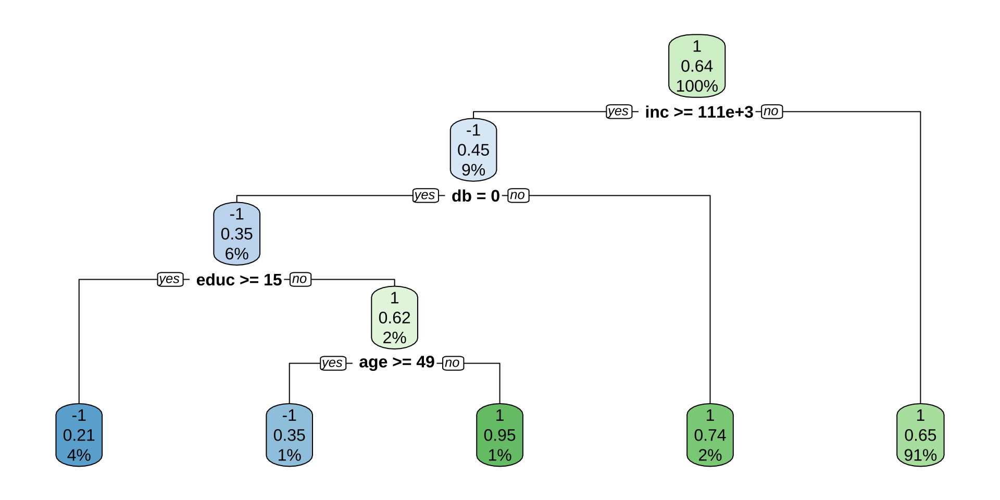

(6) Heterogeneous Treatment Effects
Causal Data Science for Business Analytics
Hamburg University of Technology
Tuesday, 18. June 2024
Introduction
Treatment Effect Heterogeneity: Motivation
- More comprehensive evaluation:
- who wins or loses and by how much?
- This is useful along at least two dimensions:
Informs action:- More efficient allocation of public and private resources via targeting in the future:
- Personalized policies, ads, medicine, …
- More efficient allocation of public and private resources via targeting in the future:
Understanding:- Heterogeneous effects can be suggestive for underlying mechanisms
Treatment Effect Heterogeneity: Definition
- Expected treatment effect in the target subpopulation with characteristics \(\mathbf{X_i}\) given by
Conditional Average Treatment Effect (CATE):- \(\tau(\mathbf{x}) = \mathbb{E}[Y_i(1) - Y_i(0) | \mathbf{X_i = x}]\)
- \(\mathbf{X_i} = \mathbf{H_i} \cup \mathbf{C_i}\)
- \(\mathbf{H_i}\): motivated by the research question to understand specific effect heterogeneity in a pre-defined the target subpopulation.
- \(\mathbf{C_i}\): confounders that are required for identification.
Randomized experiments- no confounders:- CATE defined with respect to considered heterogeneity variables: \(\mathbf{X_i} = \mathbf{H_i}\)
Measured Confounding- distinguish two types of CATEs:Group ATE (GATE)for groups G defined by H: \(\tau(\mathbf{g}) = \mathbb{E}[Y_i(1) - Y_i(0) | \mathbf{G_i = g}]\)Individualized ATE (IATE = CATE): \(\tau(\mathbf{x}) = \mathbb{E}[Y_i(1) - Y_i(0) | \mathbf{X_i = x}]\)- most flexible/ personalized/ individualized effect prediction
- Estimation step is affected by whether we are interested in GATEs or IATEs.
Treatment Effect Heterogeneity: Identification
- No need to establish new identification results:
- All target parameters can be thought of as special cases of conditioning ITE on some function \(f(\mathbf{X_i = x})\)
- And by the Law of Iterated Expectations (LIE):
\[ \begin{align*} \mathbb{E}[Y_i(1) - Y_i(0) | f(\mathbf{X_i}) = f(\mathbf{x})] &= \mathbb{E}[\mathbb{E}[Y_i(1) - Y_i(0) | \mathbf{X_i = x}, f(\mathbf{X_i = x}) ] | f(\mathbf{X_i = x})] \\ &= \mathbb{E}[\mathbb{E}[Y_i(1) - Y_i(0) | \mathbf{X_i = x} ] | f(\mathbf{X_i = x})] \end{align*} \]
- As \(\mathbf{X_i} = \mathbf{H_i} \cup \mathbf{C_i}\) is assumed to contain all confounders, the inner expectation \(\mathbb{E}[Y_i(1) - Y_i(0) | \mathbf{X_i = x} ]\) is identified in randomized experiments or under measured confounding
- => All aggregations with respect to a function \(f(\mathbf{X_i})\) are also identified.
Group Average Treatment Effects
Group ATEs: Examples
Group ATE (GATE): \(\tau(\mathbf{g}) = \mathbb{E}[Y_i(1) - Y_i(0) | \mathbf{G_i = g}]\)- Examples for subgroups of interest:
- Mutually exclusive subgroups, e.g.: \(G = \{\text{female}, \text{male}\}\), \(G = \{ \text{age} < 50, \text{age} \geq 50 \}\), \(G = \{ \text{age} < 50 \space \& \space \text{female}, \text{age} \geq 50 \space \& \space \text{female}, \text{age} \geq 50 \space \& \space \text{male}, \dots \}\), …
- Single or low-dimensional continuous variable, e.g.: G = age, G = income, …
- Other functions or small subsets of \(\mathbf{X_i}\)
- Groups should be pre-determined and not be the result of data snooping
Group ATEs: Estimation
- Three strategies:
- Stratify the data and rerun the analysis for each subgroup.
- Downside: Requires a lot of data and computation, can lead to high variance estimates for small subgroups.
- Specify an interaction term in an OLS regression model:
- \(Y_i = \beta_{0} + \tau T_i + \beta_{G_i} G_{i} + \beta_{T_iG_i} T_{i} G_{i} + \mathbf{\beta_{X_i}X_{i}}+ \epsilon_i\)
- Downside: Requires a correct model specification, can be sensitive to misspecification.
- Double Machine Learning with AIPW model to estimate the GATEs directly.
- Stratify the data and rerun the analysis for each subgroup.
Group ATEs: Double Machine Learning
Previous lecture: ATE (AIPW) can be estimated as mean of a pseudo-outcome:
- \(\hat{\tau}_{\text{ATE}}^{\text{AIPW}} = \frac{1}{N}\sum_{i=1}^n \tilde{\tau_i}_{\text{ATE}}^{\text{AIPW}}\)
Pseudo-outcome is given by:
- \(\tilde{\tau_i}_{\text{ATE}}^{\text{AIPW}} = \hat{\mu}(1, \mathbf{X_i}) - \hat{\mu}(0, \mathbf{X_i}) + \frac{T_i(Y_i - \hat{\mu}(1, \mathbf{X_i}))}{\hat{e}_1(\mathbf{X_i})} - \frac{(1-T_i)(Y_i - \hat{\mu}(0, \mathbf{X_i})}{\hat{e}_0(\mathbf{X_i}))}\)
- Equivalent to a linear regression model with pseudo-outcome and constant:
- \(\tilde{\tau_i}_{\text{ATE}}^{\text{AIPW}} = \alpha + \epsilon_i\) with \(\hat{\alpha} = \hat{\tau}_{\text{ATE}}^{\text{AIPW}}\)
- Can be extended with heterogeneity variable(s) \(G_i\):
- \(\tilde{\tau_i}_{\text{ATE}}^{\text{AIPW}} = \alpha + \beta G_i + \epsilon_i\)
- => Modelling the level of the effect, not the level of the outcome.
Group ATEs: Advantages of DML
- Neyman-orthogonality of \(\tilde{\tau_i}_{\text{ATE}}^{\text{AIPW}}\) allows to apply standard statistical inference (Semenova and Chernozhukov, 2021).
- Computationally less expensive than subgroup analyses
- Only one additional OLS, no new nuisance parameters).
- More flexible than specifying interaction terms in a linear model, as we flexibly adjust for confounding by ML methods.
- As \(\tilde{\tau_i}_{\text{ATE}}^{\text{AIPW}}\) is an unbiased signal, i.e. \(\mathbb{E}[\tilde{\tau_i}_{\text{ATE}}^{\text{AIPW}} | G_i = g] = \tau(g)\), to regress the pseudo-outcome \(\tilde{\tau_i}_{\text{ATE}}^{\text{AIPW}}\) on low-dimensional \(G_i\) we can either use
- OLS or series regression (Semenova and Chernozhukov, 2021).
- Kernel regression (Fan et al., 2022; Zimmert & Lechner, 2019).
Group ATEs: Proof of DML
- Proof that \(\mathbb{E}[\tilde{\tau_i}_{\text{ATE}}^{\text{AIPW}} \mid G_i = g] = \tau(g)\):
\[ \begin{align*} \mathbb{E}[\tilde{\tau_i}_{\text{ATE}}^{\text{AIPW}} \mid G_i = g] &= \mathbb{E} \left[ \mu(1,\mathbf{X_i}) + \frac{T_i(Y_i - \mu(1,\mathbf{X_i}))}{e(\mathbf{X_i})} - \mu(0,\mathbf{X_i}) - \frac{(1-T_i)(Y_i - \mu(0,\mathbf{X_i}))}{1 - e(\mathbf{X_i})} \bigg| G_i = g \right] \\ &\overset{LIE}{=} \mathbb{E} \left[ \underbrace{\mathbb{E} \left[ \mu(1, \mathbf{X_i}) + \frac{T_i(Y_i - \mu(1, \mathbf{X_i}))}{e(\mathbf{X_i})} \mid \mathbf{X_i = x} \right]}_{\text{CAPO-AIPW => }\mathbb{E}[Y_i(1) \mid \mathbf{X_i = x}]} - \underbrace{\mathbb{E} \left[ \mu(0, \mathbf{X_i}) + \frac{(1-T_i)(Y_i - \mu(0, \mathbf{X_i}))}{1 - e(\mathbf{X_i})} \mid \mathbf{X_i = x} \right]}_{CAPO-AIPW => \mathbb{E}[Y(0) \mid \mathbf{X_i = x}]} \bigg| G_i = g \right] \\ &= \mathbb{E}\left[\mathbb{E}[Y_i(1) \mid \mathbf{X_i = x}] - \mathbb{E}[Y_i(0) \mid \mathbf{X_i = x}] \bigg| G_i = g\right] \\ &\overset{LIE}{=} \mathbb{E}[Y_i(1) - Y_i(0) \mid G_i = g] \\ &= \tau(g) \end{align*} \]
- Law of Iterated Expectations uses that \(G_i\) is a function of \(X_i\).
Group ATEs: Example based on DML
- Assess the effect of 401(k) program participation on net financial assets of 9,915 households in the US in 1991.
- First step (not shown): Estimate \(\hat{\tau}_{\text{ATE}}^{\text{AIPW}}\) using DoubleML.
# Get the indvidual ATEs (pseudo-outcomes)
data$ate_i <- dml_irm_forest[["psi_b"]] # get numerator of score function, which is equal to pseudo outcome
mean_ate = mean(data$ate_i) # mean of pseudo outcomes = ATE
library(estimatr) # for linear robust post estimation
summary(lm_robust(ate_i ~ hown, data = data))Estimates and significance testing of the effect of target variables
Estimate. Std. Error t value Pr(>|t|)
e401 8206 1106 7.421 1.16e-13 ***
---
Signif. codes: 0 '***' 0.001 '**' 0.01 '*' 0.05 '.' 0.1 ' ' 1
Call:
lm_robust(formula = ate_i ~ hown, data = data)
Standard error type: HC2
Coefficients:
Estimate Std. Error t value Pr(>|t|) CI Lower CI Upper DF
(Intercept) 3477 711 4.890 1.025e-06 2083 4870 9913
hown 7445 1835 4.058 4.990e-05 3849 11041 9913
Multiple R-squared: 0.00106 , Adjusted R-squared: 0.0009588
F-statistic: 16.47 on 1 and 9913 DF, p-value: 4.99e-05
Metalearners
Predicting Individualized ATEs
- Group-level heterogeneity variables were hand-picked.
- Now predict individualized treatment effects based on all covariates \(\mathbf{X_i}\):
Individualized ATE (IATE = CATE): \(\tau(\mathbf{x}) = \mathbb{E}[Y_i(1) - Y_i(0) | \mathbf{X_i = x}]\)- Conditional expectation with unobserved outcome (counterfactuals)
- Given the assumptions of observed confounding, we can write the CATE as:
- \(\tau(\mathbf{x}) = \mathbb{E}[Y_i(1) - Y_i(0) | \mathbf{X_i = x}] = \mathbb{E}[Y_i | T_i, \mathbf{X_i = x}] - \mathbb{E}[Y_i | T_i, \mathbf{X_i = x}]\)
- which can be approximated with ML.
S-Learner and T-Learner
S-learner:- Use ML estimator of your choice to fit outcome model using \(\mathbf{X_i}\) AND \(T_i\) in the
full sample: \(\hat{\mu}(T_i; \mathbf{X_i})\).
- Use ML estimator of your choice to fit outcome model using \(\mathbf{X_i}\) AND \(T_i\) in the
- Estimate CATE as \(\hat{\tau}(\mathbf{x}) = \hat{\mu}(1; \mathbf{X_i}) - \hat{\mu}(0; \mathbf{X_i})\).
T-learner:- Use ML estimator of your choice to fit model \(\hat{\mu}(1; \mathbf{X_i})\) in
treated subsample.
- Use ML estimator of your choice to fit model \(\hat{\mu}(1; \mathbf{X_i})\) in
- Use ML estimator of your choice to fit model \(\hat{\mu}(0; \mathbf{X_i})\) in
control subsample.
- Use ML estimator of your choice to fit model \(\hat{\mu}(0; \mathbf{X_i})\) in
- Estimate CATE as \(\hat{\tau}(\mathbf{x}) = \hat{\mu}(1; \mathbf{X_i}) - \hat{\mu}(0; \mathbf{X_i})\).
S-Learner and T-Learner: Example
- Assess the effect of 401(k) program participation on net financial assets of 9,915 households in the US in 1991.
- Examples without proper cross-fitting.
library(hdm) # for the data
library(grf) # generalized random forests, could also use mlr3
# Get data
data(pension)
# Outcome
Y = pension$net_tfa
# Treatment
T = pension$p401
# Create main effects matrix
X = model.matrix(~ 0 + age + db + educ + fsize + hown + inc + male + marr + pira + twoearn, data = pension)
# Implement the S-Learner
TX = cbind(T,X)
rf = regression_forest(TX,Y)
T0X = cbind(rep(0,length(Y)),X)
T1X = cbind(rep(1,length(Y)),X)
cate_sl = predict(rf,T1X)$predictions - predict(rf,T0X)$predictions
hist(cate_sl)S-Learner and T-Learner: Disadvantage
- The prediction problems
do not know of joint goalto approximate a difference:- \(\hat{\mu}(1; \mathbf{X_i})\) minimizes \(MSE(\hat{\mu}(1; \mathbf{x})) = \mathbb{E}[(\hat{\mu}(1; \mathbf{x}) - \mu(1; \mathbf{X_i}))^2]\).
- \(\hat{\mu}(0; \mathbf{X_i})\) minimizes \(MSE(\hat{\mu}(0; \mathbf{x})) = \mathbb{E}[(\hat{\mu}(0; \mathbf{x}) - \mu(0; \mathbf{X_i}))^2]\).
- BUT they
should aim to minimize:
\[ \begin{align*} \text{MSE}(\hat{\tau}(\mathbf{x}))) &= \mathbb{E}[(\hat{\tau}(\mathbf{x})) - \tau(\mathbf{x})))^2] \\ &= \mathbb{E}[(\hat{\mu}(1, \mathbf{x})) - \hat{\mu}(0, \mathbf{x})) - (\mu(1, \mathbf{x})) - \mu(0, \mathbf{x}))))^2] \\ &= \mathbb{E}[(\hat{\mu}(1, \mathbf{x})) - \mu(1, \mathbf{x})))^2] + \mathbb{E}[(\hat{\mu}(0, \mathbf{x})) - \mu(0, \mathbf{x})))^2] \\ &\quad - 2\mathbb{E}[(\hat{\mu}(1, \mathbf{x})) - \mu(1, \mathbf{x})))(\hat{\mu}(0, \mathbf{x})) - \mu(0, \mathbf{x})))] \\ &= \text{MSE}(\hat{\mu}(1, \mathbf{x}))) + \text{MSE}(\hat{\mu}(0, \mathbf{x}))) - 2\text{MCE}(\hat{\mu}(1, \mathbf{x})), \hat{\mu}(0, \mathbf{x}))) \end{align*} \]
- Lechner (2018) calls the additional term
Mean Correlated Error (MCE): correlated errors matter less - Example - both make same error: \(\hat{\mu}(1; \mathbf{X_i}) = \mu(1; \mathbf{X_i}) + 2\) and \(\hat{\mu}(0; \mathbf{X_i}) = \mu(0; \mathbf{X_i}) + 2\)
- But their CATE would still be on point: \(MSE(\hat{\tau}(\mathbf{x})) = 4 + 4 - 2(2 \cdot 2) = 0\)
- Example - errors go in different direction: \(\hat{\mu}(1; \mathbf{X_i}) = \mu(1; \mathbf{X_i}) + 2\) and \(\hat{\mu}(0; \mathbf{X_i}) = \mu(0; \mathbf{X_i}) - 2\)
- But their CATE would be off: \(MSE(\hat{\tau}(\mathbf{x})) = 4 + 4 - 2(2 \cdot (-2)) = 16\)
Two Approaches to Improvements
Modifysupervised ML methods to target causal effect estimation- Method specific, e.g.:
- Causal tree (Athey and Imbens, 2016)
- Causal forest (Athey, Tibshirani & Wager, 2019)
- Not covered here (does not scale very well to high-dimensional data)
- Method specific, e.g.:
Combinesupervised ML methods to target causal effect estimation- Generic approach -
Metalearners, e.g.:- X-learner (Künzel et al., 2019)
- not covered here; handles sample imbalance, but not doubly robust
- R-learner
- DR-learner
- X-learner (Künzel et al., 2019)
- Generic approach -
What are Metalearners?
- Metalearners combine multiple supervised ML steps in a pipeline that outputs predicted CATEs.
- The common ones require the following steps:
Estimate nuisance parametersusing suitable ML method.- Plug them into a clever
minimization problemtargeting CATE. Solve the minimization problemusing suitable ML method.PredictCATE using the model learned in 3.
- Most popular ML methods are suitable and can be applied in steps 1, 3 and 4.
- Like for standard prediction methods, statistical inference is usually not available.
R-learner: Idea
Partially linear model, but now allowing for treatment effects that vary with \(\mathbf{X}\):- \(Y_i = \tau(\mathbf{X_i}) T_i + g(\mathbf{X_i}) + \epsilon_{Y_i}, \quad \mathbb{E}(\epsilon_{Y_i} | T_i,\mathbf{X_i}) = 0\)
- => \(\underbrace{Y_i - \overbrace{\mathbb{E}[Y_i \mid \mathbf{X_i}]}^{\mu(\mathbf{X_i})}}_{\text{outcome residual}} = \tau(\mathbf{X_i}) \underbrace{( T_i - \overbrace{\mathbb{E}[T_i \mid \mathbf{X_i}]}^{e(\mathbf{X_i})})}_{\text{treatment residual}} + \epsilon_{Y_i}\)
- This motivates the R-learner of Nie and Wager, 2020:
- \(\hat{\tau}_{\text{RL}}(\mathbf{x}) = \arg \min_{\tau} \sum_{i=1}^n ( Y_i - \hat{\mu}(\mathbf{X_i}) - \tau(\mathbf{X_i}) ( T_i - \hat{e}(\mathbf{X_i})))^2\)
- with cross-fitted high-quality nuisance parameters from first step.
- But how to estimate it?
R-learner with Linear ML-Methods
- CATE as linear function \(\tau(\mathbf{X_i}) = \mathbf{\beta' X_i}\):
\[ \begin{align*} \hat{\beta}_{RL} &= \underset{\beta}{\operatorname{arg\,min}} \sum_{i=1}^N( Y_i - \hat{\mu}(\mathbf{X_i}) - \mathbf{\beta'} \underbrace{(T_i - \hat{e}(\mathbf{X_i})) \mathbf{X_i}}_{=\mathbf{\tilde{X}_i}})^2 \\ &= \underset{\beta}{\operatorname{arg\,min}} \sum_{i=1}^N \left( Y_i - \hat{\mu}(\mathbf{X_i}) - \mathbf{\beta'} \mathbf{\tilde{X}_i} \right)^2 \end{align*} \]
\(\mathbf{\tilde{X}_i} = (T_i - \hat{e}(\mathbf{X_i})) \mathbf{X_i}\) are modified / pseudo-covariates.
\(\hat{\tau}_{\text{RL}}(\mathbf{x}) = \mathbf{\hat{\beta}_{RL} x} \neq \mathbf{\hat{\beta}_{RL} \tilde{x}}\) is the estimated CATE for a specific \(\mathbf{x}\).
All linear shrinkage estimators (Lasso and friends) can be applied, nuisance parameters can still be estimated with non-linear ML.
R-learner with Generic ML-Methods
- If we are not willing to impose linearity of the CATE, we can rewrite the R-learner:
\[ \begin{align*} \hat{\tau}_{\text{RL}}(\mathbf{x}) &= \arg \min_{\tau} \sum_{i=1}^n ( Y_i - \hat{\mu}(\mathbf{X_i}) - \tau(\mathbf{X_i}) ( T_i - \hat{e}(\mathbf{X_i})))^2 \\ &= \arg \min_{\tau} \sum_{i=1}^n \frac{( T_i - \hat{e}(\mathbf{X_i}))^2}{(T_i - \hat{e}(\mathbf{X_i}))^2}(Y_i - \hat{\mu}(\mathbf{X_i}) - \tau(\mathbf{X_i}) ( T_i - \hat{e}(\mathbf{X_i})))^2 \\ &= \arg \min_{\tau} \sum_{i=1}^n (T_i - \hat{e}(\mathbf{X_i}))^2 \bigg(\frac{Y_i - \hat{\mu}(\mathbf{X_i}) - \tau(\mathbf{X_i}) ( T_i - \hat{e}(\mathbf{X_i}))}{ T_i - \hat{e}(\mathbf{X_i})}\bigg)^2 \\ &= \arg \min_{\tau} \sum_{i=1}^n (T_i - \hat{e}(\mathbf{X_i}))^2 \bigg(\frac{Y_i - \hat{\mu}(\mathbf{X_i})}{ T_i - \hat{e}(\mathbf{X_i})} - \tau(\mathbf{X_i})\bigg)^2 \\ \end{align*} \]
- Supervised ML methods that can deal with weighted minimization (e.g. neural nets, random forest, boosting, …) with
- weights: \((T_i - \hat{e}(\mathbf{X_i}))^2\).
- pseudo-outcome: \(\frac{Y_i - \hat{\mu}(\mathbf{X_i})}{ T_i - \hat{e}(\mathbf{X_i})}\).
- the unmodified covariates: \(\mathbf{X_i}\).
DR-learner
Recall the pseudo-outcome of the AIPW-ATE from previous lecture and condition on \(\mathbf{X_i}\) (same “trick” as for GATE estimation):
- \(\tau_{\text{DR}}(\mathbf{x}) = \mathbb{E}\bigg[ \underbrace{\hat{\mu}(1, \mathbf{X_i}) - \hat{\mu}(0, \mathbf{X_i}) + \frac{T_i(Y_i - \hat{\mu}(1, \mathbf{X_i}))}{ \hat{e}_1(\mathbf{X_i})} - \frac{(1-T_i)(Y_i - \hat{\mu}(0, \mathbf{X_i})}{\hat{e}_0(\mathbf{X_i}))}}_{\tilde{\tau_i}_{\text{ATE}}^{\text{AIPW}}} \bigg| \mathbf{X_i= x} \bigg]\)
- \(\tau_{\text{DR}}(\mathbf{x}) = \mathbb{E}\bigg[ \tilde{\tau_i}_{\text{ATE}}^{\text{AIPW}} \bigg| \mathbf{X_i= x} \bigg]\)
DR-learnerby Kennedy (2020) uses \(\tilde{\tau_i}_{\text{ATE}}^{\text{AIPW}}\) in a generic ML problem:- \(\hat{\tau}_{RL}(\mathbf{x}) = \underset{\tau}{\operatorname{arg\,min}} \sum_{i=1}^N \left( \tilde{\tau_i}_{\text{ATE}}^{\text{AIPW}} - \tau(\mathbf{X_i})\right)^2\)
Cross-fitting: in 4 subsamples (1) train a model for \(\hat{e(\mathbf{X_i})}\), (2) train a model for \(\hat{\mu(\mathbf{X_i})}\), (3) construct \(\tilde{\tau_i}_{\text{ATE}}^{\text{AIPW}}\) and regress on \(\mathbf{X_i}\), (4) predict \(\hat{\tau}_{RL}(\mathbf{x})\). Then rotate.
DR-learner: Example
- Assess the effect of 401(k) program participation on net financial assets of 9,915 households in the US in 1991.
library(hdm) # for the data
library(causalDML) # generalized random forests, could also use mlr3
# Get data
data(pension)
# Outcome
Y = pension$net_tfa
# Treatment
T = pension$p401
# Create main effects matrix
X = model.matrix(~ 0 + age + db + educ + fsize + hown + inc + male + marr + pira + twoearn, data = pension)
# Implement the DR-Learner
dr = dr_learner(Y,T,X,
ml_w = list(create_method("forest_grf")),
ml_y = list(create_method("forest_grf")),
ml_tau = list(create_method("forest_grf"))
)
# DR-learner distribution of B-A
hist(dr$cates[,1])
HTE Evaluation
How to evaluate estimated CATEs?
Descriptive: histogram, kernel density plots, box plots, etc. …Inference: test whether effect heterogeneity is systematic or just noise.- Explore what drives the heterogeneous effects.
- Challenges with inference:
- Unique to causal ML: Due to missing counterfactual, we cannot benchmark predicted against effect => no classic out-of-sample testing.
- Shared with supervised ML: statistical inference for predicted CATE is not available or at least challenging.
- Approach to inference:
- Rather than (consistent) estimation of & inference on the individual CATEs directly, derive summary statistics of their (noisy) distribution.
- Test joint hypothesis that there is effect heterogeneity & the applied estimation method is able to detect it at least partially.
- We discuss the three methods proposed by Chernozhukov et al. (2017-2023):
- Best Linear Predictor (
BLP). - High-vs.-low Sorted Group Average Treatment Effect (
GATES). - Classification Analysis (
CLAN) to explore what drives the heterogeneous effects.
- Best Linear Predictor (
Best Linear Predictor (BLP) - Definition
- BLP is defined as the solution of the
hypothetical regression of the true CATE on the demeaned predicted CATE:
Definition “Best Linear Predictor (BLP)”
The best linear predictor of \(\tau(\mathbf{X_i})\) by \(\hat{\tau}(\mathbf{X_i})\) is the solution to:
\((\beta_1, \beta_2) = \underset{\tilde{\beta_1}, \tilde{\beta_2}}{\operatorname{arg\,min}} \space \mathbb{E} \left[ \left( \tau(\mathbf{X_i}) - \tilde{\beta_1} - \tilde{\beta_2} \left( \hat{\tau}(\mathbf{X_i}) - \mathbb{E}[\hat{\tau}(\mathbf{X_i})] \right) \right)^2 \right]\)
- which, if exists, is defined as
- \(\mathbb{E}[\tau(\mathbf{X_i}) | \hat{\tau}(\mathbf{X_i}) ] := \beta_1 + \beta_2\underbrace{(\hat{\tau}(\mathbf{X_i}) - \mathbb{E}[\hat{\tau}(\mathbf{X_i})])}_{\text{demeaned prediction}}\)
- where
- \(\beta_1 = \mathbb{E}[\tau(\mathbf{X_i})] = \text{ATE} \text{ (because of the demeaning)}\)
- \(\beta_2 = \frac{\text{Cov}[\tau(\mathbf{X_i}), \hat{\tau}(\mathbf{X_i})]}{\text{Var}[\hat{\tau}(\mathbf{X_i})]}\)
BLP - Interpretation
\(\beta_2 = \frac{\text{Cov}[\tau(\mathbf{X_i}), \hat{\tau}(\mathbf{X_i})]}{\text{Var}[\hat{\tau}(\mathbf{X_i})]} = 1\) if \(\hat{\tau}(\mathbf{X_i}) = \tau(\mathbf{X_i})\) (what we would like to see)
\(\beta_2 = 0\) if \(\text{Cov}[\tau(\mathbf{X_i}), \hat{\tau}(\mathbf{X_i})] = 0\), which can have
two reasons:- \(\tau(\mathbf{X_i})\) is
constant(no heterogeneity to detect).
- \(\tau(\mathbf{X_i})\) is
- \(\tau(\mathbf{X_i})\) is
not constantbut the estimator is not capable of finding it (bad estimator and/or not enough observations).
- \(\tau(\mathbf{X_i})\) is
Therefore, testing \(H_0: \beta_2 = 0\) is a
joint testof- existence of heterogeneity and
- the estimators capability to find it.
BLP - Identification Strategy A
Strategy A: Weighted residual BLP
\((\beta_1, \beta_2) = \underset{\tilde{\beta_1}, \tilde{\beta_2}}{\operatorname{arg\,min}} \space \mathbb{E} \left[ \omega(\mathbf{X_i}) \left( Y_i - \tilde{\beta_1}(T_i - e(X_i)) - \tilde{\beta_2} (T_i - e(X_i)) \left( \hat{\tau}(\mathbf{X_i}) - \mathbb{E}[\hat{\tau}(\mathbf{X_i})] \right) \color{#005e73}{- \alpha \mathbf{X^{C}_{i}}} \right)^2 \right]\)
where:
- \(\omega(\mathbf{X_i}) = \frac{1}{e(\mathbf{X_i})(1-e(\mathbf{X_i}))}\)
- \(\color{#005e73}{\mathbf{X^{C}_{i}}}\) is not required for identification, but contains optional functions of \(X_i\) to reduce estimation noise, e.g. \([1,\hat\mu(0,\mathbf{X_i}), e(\mathbf{X_i}), e(\mathbf{X_i})\hat{\tau}(\mathbf{X_i})]\)
See Appendix A in Chernozhukov et al. (2017-2023) for a detailed derivation.
BLP - Identification Strategy B
Strategy B: Horvitz-Thompson BLP
\((\beta_1, \beta_2) = \underset{\tilde{\beta_1}, \tilde{\beta_2}}{\operatorname{arg\,min}} \space \mathbb{E} \left[ \left( H_iY_i - \tilde{\beta_1} - \tilde{\beta_2} \left( \hat{\tau}(\mathbf{X_i}) - \mathbb{E}[\hat{\tau}(\mathbf{X_i})] \right) \color{#005e73}{- \alpha H_i \mathbf{X^{C}_{i}}} \right)^2 \right]\)
where:
- \(H_i = \frac{T_i-e(\mathbf{X_i})}{e(\mathbf{X_i})(1-e(\mathbf{X_i}))}\) are the Horvitz-Thompson (IPW) weights.
- \(H_iY_i\) serves as a
pseudo-outcome. - \(\color{#005e73}{\mathbf{X^{C}_{i}}}\) is not required for identification, but contains optional functions of \(X_i\) to reduce estimation noise, e.g. \([1,\hat\mu(0,\mathbf{X_i}), e(\mathbf{X_i}), e(\mathbf{X_i})\hat{\tau}(\mathbf{X_i})]\)
See Appendix A in Chernozhukov et al. (2017-2023) for a detailed derivation.
Sorted Group Average Treatment Effect (GATES)
Idea:- slice the distribution of \(\hat{\tau}(\mathbf{X_i})\) into \(K\) parts and compare the average treatment effect of individuals within each slice.
- if \(\hat{\tau}(\mathbf{X_i})\) is a good approximation of \(\tau(\mathbf{X_i})\), then we expect to observe the following monotonicity: \(\gamma_1 \leq \gamma_2 \leq \ldots \leq \gamma_K\).
Definition “Sorted Group Average Treatment Effect (GATES)”
\(\gamma_k := \mathbb{E}[ \tau(\mathbf{X_i}) | G_k]\), \(k = 1, \ldots, K\)
- where \(G_k= \{\hat{\tau}(\mathbf{X_i}) \in I_k \}\) with \(I_k = [l_{k-1},l_k)\) and \(-\infty = l_0 < l_1 < \dots < l_K = \infty\).
GATES - Identification
Strategy A: Weighted residual GATES
\((\gamma_1, \dots, \gamma_K) = \underset{\tilde{\gamma}_1, \dots, \tilde{\gamma}_K}{\operatorname{arg\,min}} \space \mathbb{E} \left[ \omega(\mathbf{X_i}) \left( Y_i - \sum_k\tilde{\gamma_k}(T_i - e(X_i))\mathbb{1}[G_k] \color{#005e73}{- \alpha \mathbf{X^{C}_{i}}} \right)^2 \right]\)
- where \(\omega(\mathbf{X_i}) = \frac{1}{e(\mathbf{X_i})(1-e(\mathbf{X_i}))}\).
Strategy B: Horvitz-Thompson GATES
\((\gamma_1, \dots, \gamma_K) = \underset{\tilde{\gamma}_1, \dots, \tilde{\gamma}_K}{\operatorname{arg\,min}} \space \mathbb{E} \left[ \left( H_iY_i -\sum_k \tilde{\gamma_k}\mathbb{1}[G_k] \color{#005e73}{- \alpha H_i \mathbf{X^{C}_{i}}} \right)^2 \right]\)
- where \(H_iY_i\) serves as a
pseudo-outcomeand \(H_i = \frac{T_i-e(\mathbf{X_i})}{e(\mathbf{X_i})(1-e(\mathbf{X_i}))}\) being the Horvitz-Thompson (IPW) weights.
- where \(H_iY_i\) serves as a
\(\color{#005e73}{\mathbf{X^{C}_{i}}}\) is not required for identification, but contains optional functions of \(X_i\) to reduce estimation noise, e.g. \([1,\hat\mu(0,\mathbf{X_i}), e(\mathbf{X_i}), e(\mathbf{X_i})\hat{\tau}(\mathbf{X_i})]\)
See Appendix A in Chernozhukov et al. (2017-2023) for a detailed derivation.
Classification Analysis (CLAN)
Classification Analysis (CLAN) can be implemented by simple mean comparisons of covariates in extreme GATES groups:
Definition “Classification Analysis (CLAN)”
Classification Analysis (CLAN) compares the covariate values of the least affected group G1 with the most affected group GK defined for the GATES:
- \(\delta_K - \delta_1\)
where
- \(\delta_k = \mathbb{E}[X_i | G_k] = \frac{1}{n_k} \sum_{i=1}^{n} X_i \mathbb{1}[G_k]\).
BLP, GATES & CLAN - Implementation
R package
GenericMLby Welz, Alfons, Demirer, and Chernozhukov (2022).Algorithm:IN: \(\text{Data} = (Y_i, \mathbf{X_i}, T_i )^{N}_{i=1}\), significance level \(\alpha\), a suite of ML methods, number of splits \(S\).OUT: \(p-\text{values}\) and \((1-2\alpha)\) confidence intervals of point estimates of each target parameter in GATES, BLP, and CLAN.
- Compute propensity scores \(\hat{e}(\mathbf{X_i})\).
- Do S splits of \(\{1, . . . ,N\}\) into disjoint sets \(A\) and \(M\) of same size.
- for each ML method and each split \(s = 1, . . . , S\), do
- Tune and train each ML method to learn \(\hat{\mu}(0, \mathbf{X_i})\) and \(\hat{\tau}(\mathbf{X_i})\) on A.
- On M, use \(\hat{\mu}(0, \mathbf{X_i})\) and \(\hat{\tau}(\mathbf{X_i})\) to estimate the BLP, GATES, CLAN target parameters.
- Compute some performance measures for the ML methods.
- Choose the best ML method based on the medians of the performance measures.
- Calculate the medians of the confidence bounds, p-values, and point estimates of each target parameter.
- Adjust the confidence bounds and p-values.
More References
CATE Prediction Methods:- BART (Hahn, Murray & Carvalho, 2020).
- Causal Boosting/MARS, … (Powers, Qian, Jung, Schuler, Shah, Hastie & Tibshirani, 2019).
- Dragonnet (Shi, Blei & Veitch, 20191).
- Modified Causal Forest (Lechner & Mareckova, 2022).
- Orthogonal Random Forest (Oprescu, Syrgkanis & Wu, 2019).
- TARNet (Shalit, Johansson & Sontag 2019).
- X-learner (Künzel, Sekhon, Bickel & Yu, 2019).
HET Evaluation:- Rank-Weighted Average Treatment Effect (RATE) (Yadlowsky et al., 2021).
- Calibration Error for Heterogeneous Treatment Effects (Xu & Yadlowsky, 2022).
- More on GATES in experiments (Imai & Li, 2022-2024).
Optimal Policy Learning
Optimal Policy Learning - Goal
- From evaluation (What works for whom?) towards data-driven (personalized) treatment recommendations:
- How to optimally treat whom?
- How to optimally treat whom?
Notation:- Binary treatment indicator: \(T_i \in \{0, 1\}\)
- Potential outcome (PO) under treatment \(t\): \(Y_i(t)\)
- Exogenous covariate(s): \(\mathbf{X_i}\)
- Conditional Average PO: \(\mu_t(\mathbf{x}) := \mathbb{E}[Y(t) \mid \mathbf{X_i = x}]\)
- Conditional Average Treatment Effect (CATE): \(\tau(\mathbf{x}) := \mu_1(\mathbf{x}) - \mu_0(\mathbf{x})\)
Additional notation:- Policy rule for \(x\) (conditional treatment choice): \(\pi(\mathbf{X_i}) \in \{0,1\}\).
- PO under policy \(\pi(\mathbf{X_i})\): \(Y_i(\pi(\mathbf{X_i}))\).
- Value function (average PO under policy \(\pi(\mathbf{X_i})\)): \(Q(\pi) := \mathbb{E}[Y_i(\pi(\mathbf{X_i}))]\).
Goal: Find the optimal policy \(\pi^*\) that maximizes the value function \(Q(\pi)\).
Optimal Policy Alternatives
- Assign individuals to treatment with higher PO under treatment than without?
- \(\pi^* = \mathbb{1}[Y_i(1) > Y_i(0)] = \mathbb{1}[Y_i(1) - Y_i(0) > 0] = \mathbb{1}[\tau_i > 0]\)
Fundamental problem of causal inference: counterfactuals unknown.
- Assign individuals to treatment with higher CATE than without?
- \(\pi^* = \mathbb{1}[Y_i(1) > Y_i(0) | \mathbf{X_i = x}] = \mathbb{1}[\tau(\mathbf{X_i = x}) > 0]\)
Problem: minimizing \(\text{MSE}_{\text{CATE}} = \mathbb{E}[(\hat{\tau}(\mathbf{x}) - \tau(\mathbf{x})^2]\) does not necessarily improve downstream policy rule learning (Qian & Murphy, 2011).- Similar to the case where MSE minimization in treated and control groups separately is not the best strategy to minimize CATE MSE.
- Instead: \(\pi^* = \underset{\pi}{\operatorname{arg\,max}} \space \mathbb{E}[Y_i(\pi(\mathbf{X_i}))] = \underset{\pi}{\operatorname{arg\,max}} \space Q(\pi(\mathbf{X_i})))\)
Optimal Policy Objective Function
- Objective function can have many different forms but one has proven very useful in the context of ML policy learning:
- Comparing the value function against a
benchmark policythat assigns treatments viafair coin flip:- 50-50 chance of being treated: \(\pi^{\text{coin}} \sim \text{Bernoulli}(0.5)\).
- Comparing the value function against a
\[ \begin{align*} \pi^* &= \arg \max_{\pi} Q(\pi) = \arg \max_{\pi} \mathbb{E}[Y(\pi)] = \arg \max_{\pi} \mathbb{E}[Y(\pi) \color{#00C1D4}{- 0.5 \mathbb{E}[Y(1)] + 0.5 \mathbb{E}[Y(0)]}] \\ &= \arg \max_{\pi} \mathbb{E}[\pi Y(1) + (1 - \pi) Y(0)] - 0.5 \mathbb{E}[Y(1)] - 0.5 \mathbb{E}[Y(0)] \\ &= \arg \max_{\pi} \mathbb{E}[(\pi - 0.5) Y(1)] + \mathbb{E}[(0.5 - \pi) Y(0)] = \arg \max_{\pi} \mathbb{E}[(\pi - 0.5) (Y(1) - Y(0))] \\ &= \arg \max_{\pi} {\color{#00C1D4}2} \mathbb{E}[(\pi - 0.5) (Y(1) - Y(0))] \\ &= \arg \max_{\pi} \mathbb{E}[(2\pi - 1)(Y(1) - Y(0))] \\ &\overset{LIE}{=} \arg \max_{\pi} \mathbb{E}[(2\pi - 1) \tau(\mathbf{X_i})] \\ &= \arg \max_{\pi} \underbrace{\mathbb{E}[|\tau(\mathbf{X_i})| \text{sign}(\tau(\mathbf{X_i})) (2\pi(\mathbf{X_i}) - 1)]}_{A(\pi)} \\ \end{align*} \]
- where \((2\pi(\mathbf{X_i}) - 1) \in \{-1,1\}\) is one if policy assigns treatment and minus one if not.
Optimal Policy Objective Function - Intuition
- \(A(\pi) := \mathbb{E}[|\tau(\mathbf{X_i})| \text{sign}(\tau(\mathbf{X_i})) (2\pi(\mathbf{X_i}) - 1)]\) measures the
advantageof a policy compared to random allocation:- If \(\text{sign}(\tau(\mathbf{X_i})) (2\pi(\mathbf{X_i}) - 1) = 1\), i.e. if the policy picks the better treatment for \(\mathbf{X_i}\), we
earn the absolute value of the CATE. - If \(\text{sign}(\tau(\mathbf{X_i})) (2\pi(\mathbf{X_i}) - 1) = -1\), i.e. if the policy picks the worse treatment for \(\mathbf{X_i}\), we
lose the absolute value of the CATE.
- If \(\text{sign}(\tau(\mathbf{X_i})) (2\pi(\mathbf{X_i}) - 1) = 1\), i.e. if the policy picks the better treatment for \(\mathbf{X_i}\), we
- We need to
get it right for those with biggest CATEs, those with CATEs close to zero are negligible. - This shows the
difference to CATE MSE minimization, where we need to find good approximations everywhere.
Optimal Policy Identification & Estimation
- Potential outcomes or CATE functions unknown, need to be identified before optimization.
- Athey and Wager (2021) recommend the
pseudo-outcome(again) because of all the nice properties:- \(\tilde{\tau_i}_{\text{ATE}}^{\text{AIPW}} = \hat{\mu}(1, \mathbf{X_i}) - \hat{\mu}(0, \mathbf{X_i}) + \frac{T_i(Y_i - \hat{\mu}(1, \mathbf{X_i}))}{\hat{e}_1(\mathbf{X_i})} - \frac{(1-T_i)(Y_i - \hat{\mu}(0, \mathbf{X_i})}{\hat{e}_0(\mathbf{X_i}))}\)
Binary weighted classification problem: classify the sign of the CATE while favoring correct classifications with larger absolute CATEs.- \(\hat{\pi} = \underset{\pi \in \Pi}{\arg \max} \left\{ \frac{1}{N} \sum_{i=1}^N \overbrace{|\tilde{\tau_i}_{\text{ATE}}^{\text{AIPW}}|}^{\text{weight}} \underbrace{\operatorname{sign}(\tilde{\tau_i}_{\text{ATE}}^{\text{AIPW}})}_{\text{to be classified}} \overbrace{(2\pi(X_i) - 1)}^{\text{function to be learned}} \right\}\)
- Possible methods: e.g. decision trees/forests, logistic lasso, SVM, etc.
Optimal Policy Learning: Example
- Assess the effect of 401(k) program participation on net financial assets of 9,915 households in the US in 1991.
- First step (not shown): Estimate \(\hat{\tau}_{\text{ATE}}^{\text{AIPW}}\) using DoubleML.
# Load required packages
library(mlr3)
library(mlr3learners)
library(tidyverse)
library(rpart.plot)
# Get and transform the indvidual ATEs (pseudo-outcomes)
data$ate_i <- dml_irm_forest[["psi_b"]] # get numerator of score function, which is equal to pseudo outcome
data$sign <- sign(data$ate_i) # get sign of pseudo outcomes
data$weights <- abs(data$ate_i) # get weights (absolute value of pseudo outcomes)
# Optimal Policy Learning with Classification Tree
data <- data[,c("sign", "weights", "age", "db", "educ", "fsize",
"hown", "inc", "marr", "pira", "twoearn")] # select columns
task <- as_task_classif(data, target = "sign") # task
task$set_col_roles("weights", roles = "weight") # define weights
lrnr <- lrn("classif.rpart") # learner decision tree
lrnr$train(task) # train
rpart.plot(lrnr$model, yesno = 2) # plot
# Classification Analysis
data$pi <- 2 * (as.numeric(lrnr$predict(task)$response) - 1.5) # Output takes values 1 and 2, therefore recode to -1/1
data_x <- data[, -c(1:2)] # remove sign and weights
CLAN = cbind(colMeans(data_x[pi == -1,]),colMeans(data_x[pi == 1,])) # calculate CLAN
colnames(CLAN) = c("No 401(k)","401(k)") # rename columns
round(CLAN,2) # print
No 401(k) 401(k)
age 45.38 41.03
db 0.00 0.27
educ 16.02 13.19
fsize 2.95 2.87
hown 0.97 0.63
inc 138411.00 36532.74
marr 0.97 0.60
pira 0.72 0.24
twoearn 0.68 0.38
pi -1.00 1.00| Thank you for your attention! | |

|
|
Causal Data Science: (6) Heterogeneous Treatment Effects